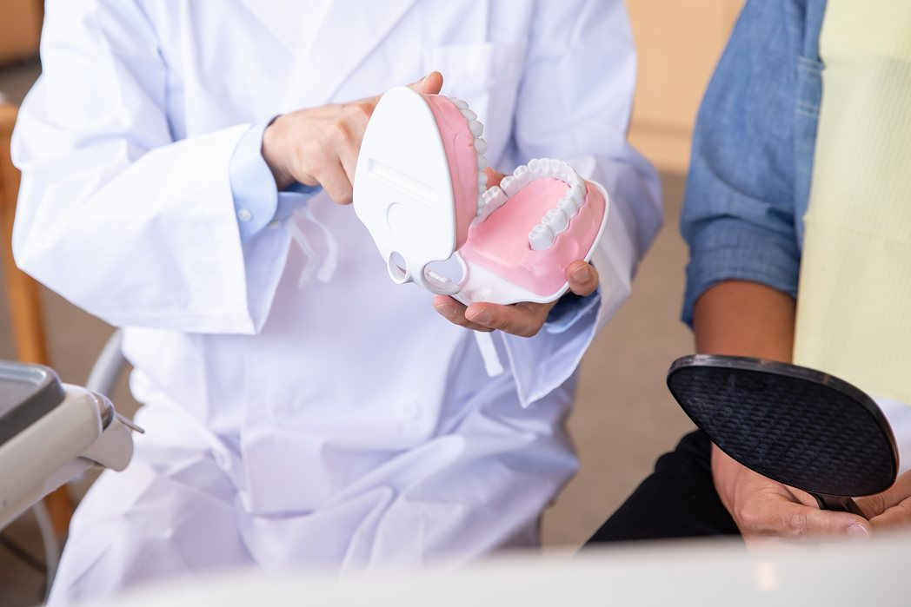

中村歯科医院の義歯（入れ歯）についてのご案内です。
歯を失った部分を補うために、歯科医師の長年の経験と技術、義歯専門の技工所により保険診療においても精度の高い義歯を提供させていただいております。又、保険の入れ歯から高機能な自費義歯まで、幅広く対応していますので気楽にご相談ください。
総入れ歯・部分入れ歯に加え、金属床義歯、アタッチメント義歯、マグネット義歯（マグフィット）、コーヌスクローネ義歯、スマイルデンチャー、コンフォート（生体シリコン）など、目立ちにくく、しっかり噛める快適な義歯をご用意しています。

RESERVATION & CONTACT
診療時間 9:30〜13:00 ／ 15:00〜19:00 ※土曜午後は15:00〜17:00・日曜・祝日休診